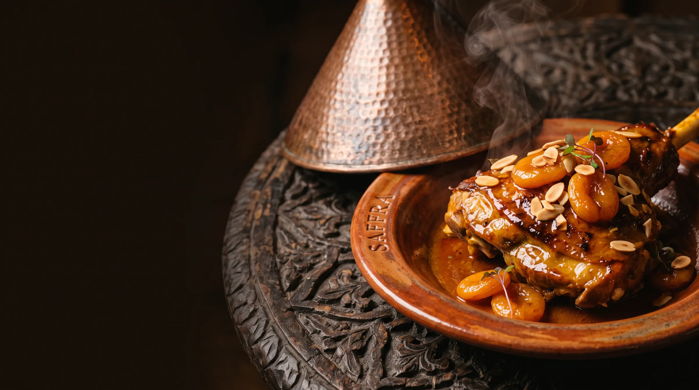

Contemporary Moroccan cuisine · Marrakech
The lid lifts. The table falls silent.
Recipes from the houses of the medina, produce from the Atlas, the precision of a fine dining kitchen. An alcohol-free table, and tea served as it should be.
I · Copper
Hammered by hand in the medina, the lid holds the steam until the very last second.
II · Saffron
A few threads infused in the cooking juices. The glaze takes its colour, the room takes its scent.
III · Clay
Served in the clay it was cooked in, engraved with the name of the house.
Seven hours over a low fire, one moment at the table.
The house
We cook slowly and serve simply. Every dish starts with a recipe from a Marrakech home, then goes through a fine dining kitchen without losing its warmth.
01 · Red gold
A spice weighed by the gram
Saffron sets the tone of the house: in the lamb glaze, in the couscous broth, in a cream at the end of the meal. Always a few threads, never more.
02 · The land
From the mountain to the plate
Olives, almonds, apricots, mountain thyme honey: the menu follows what comes down from the Haouz plain and the valleys of the Atlas, season by season.
03 · The last gesture
Poured from high, three times
Green tea, fresh mint, a little sugar. Poured from high so it foams in the glass, at the end of every meal, offered by the house.
Reservations
Your table is waiting
Dinner from Tuesday to Sunday. Choose an evening, a time and the number of guests.
Booking noted